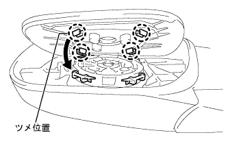

|
Connect the connector.
With two screws, attach the side turn signal lamp ASSY LH.
- ■ Attention ■
- Check if the side -turn signal lamp ASSY LH tip is set.
Side Turn Signal Lamp Assy LH installation |
| 1. Side -turn signal lamp Assy LH installation |
|
Connect the connector.
With two screws, attach the side turn signal lamp ASSY LH.
| 2. Outmiller Cover LH installation |
 |
Finish the eight claws and attach the Outmiller Cover LH.
| 3. Otariya View Mirror LH installation |
|  |
Fine the claws and attach the Otari View Mirror LH.